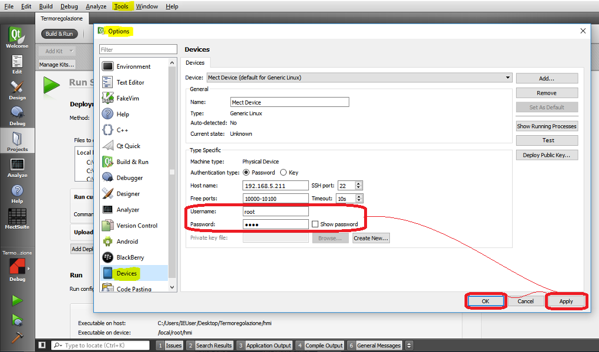

Not usable since version 3.3.x
Default system “Username” and “Password” are:
Username: root
Password: root
To change password follow these steps, to write in ssh / telnet:
mount -o remount,rw /
passwd
mount -o remount,ro /
In particular follow these steps:
Open “Command prompt”
Write: telnet 192.168.5.211 (Ip address of the device)
In “mect login:” write: root
In “Password” write: root
Write: mount -o remount,rw /
Press “Enter”
Write: passwd
Press “Enter”
Write Your own password and press “Enter”
Confirm new password and press “Enter”
Write: mount -o remount,ro /
Press “Enter”
Now the password is changed.
To download the HMI application it is necessary to change the password of the QtCreator program. See the following figure.
